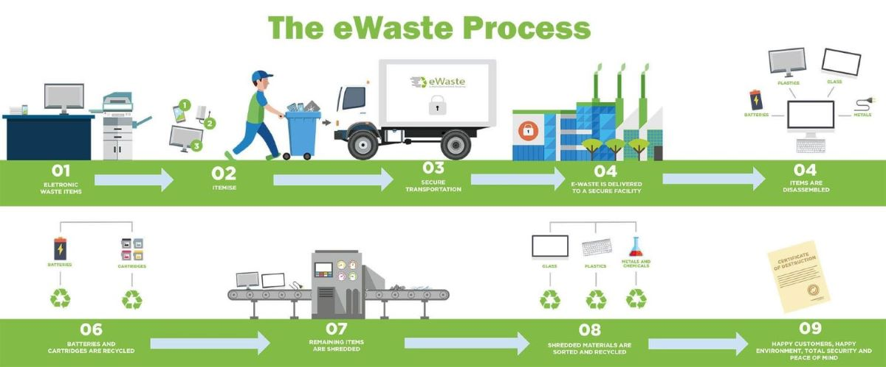
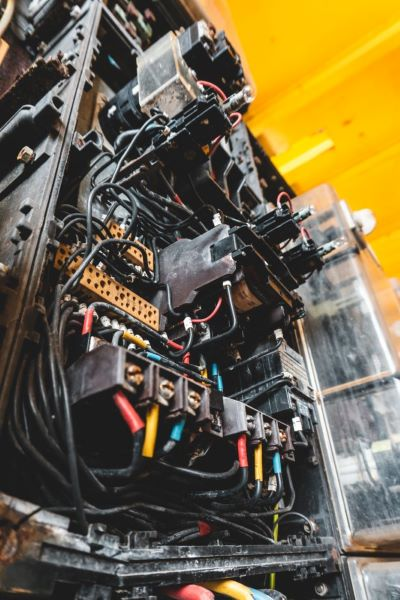
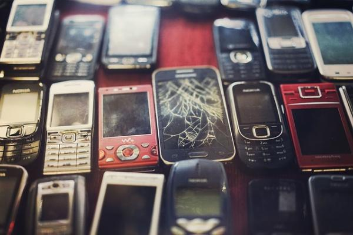
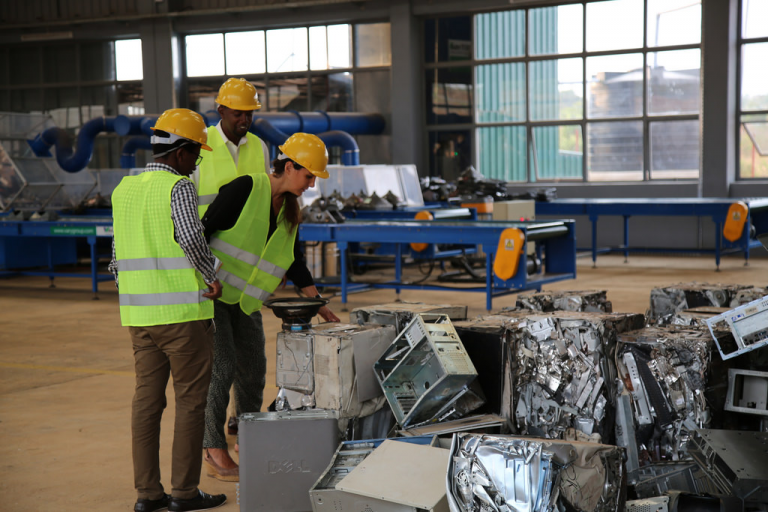

Top Solutions to E-waste Problems
Best solution for ewaste management is we have to reuse,recycle the ewaste.dont decompose Ewaste because while decomposing the ewaste the harmful gases and metals released in envirnment.
and its effects on human health and envirnment
The Cycle Of Old Electronics
The problem, of course, is one we all recognize: technology. As technology becomes more advanced, the life span of our devices just keeps getting shorter.
Far too many products simply get thrown out once a newer and more sophisticated version comes out, or once their batteries die, to be replaced with new devices. Manufacturers, it’s known, intentionally build devices to eventually become obsolete.
The challenge is often in getting that message out to a wider number of people worldwide.
If they can make it part of their weekly routine to recycle plastics, cans, and newspapers, why not a used smartphone or laptop as well?
1. Recycling
More consumers need to get into the habit of taking their used electronics to an experienced recycling firm that can disassemble them, separating and categorizing the contents by material and cleaning them, then shredding them mechanically for further sorting with advanced separation technologies.

Photo by Dean Brierley on Unsplash
An experienced recycling firm like Great Lakes Electronics Corporation will meet the highest standards for how they recycle our e-waste and ensure that nothing of value within any device gets wasted. By doing so, they’re also able to meet the high demand for recycling metals from used electronics, which are then used to make new products.
2. Education
The second most important solution is to educate people about how important recycling is for e-waste.
It can begin with setting an example, making a commitment on your own to take any electronic device you have that’s no longer wanted or being used, and bring it to a recycling firm rather than throw it out with your regular trash or toss it in a desk drawer.
But then it’s also important to be vocal about that with others: to note that out of concern for our environment, you adopted the practice of recycling each device.
Writing about the environmental benefits of recycling e-waste on social media sites is also a good place to start spreading the word.
3. Teach
It’s important to spread that message to your family, friends, neighbors, and coworkers, but it’s also important to get the message to our future leaders — our children.
You could start by asking your teacher if you could work on a project to have all the kids at school bring in the old cell phones their parents no longer want, and teach the students
how to collect the devices and get them to a recycling firm.
And it isn’t just schools that have a role to play here. Non-profit organizations, municipal governments and businesses in the private sector can also get involved in hosting community events that promote recycling and educating people about our e-waste challenge.
4. Keep Learning
Just as the technology that creates smartphones and other devices keeps changing, the same is true when it comes to e-waste. In the U.S., 25 states now have laws that aim to either prevent used electronics from being sent to landfills, or that promote recycling.
The European Union has established new goals for increasing e-waste recycling rates. The United Nations has launched the Step-Initiative to introduce a comprehensive approach to handling E-Waste, while also preparing professionals to work in the field of E-Waste management.

Did you know that recycling e-waste helps preserve our natural resources? Did you know recycling e-waste eliminates the problem that data security poses when e-waste gets thrown away, since recycling firms can eliminate your old data from your unwanted devices?
Recycling also promotes a circular economy by making recycled metals available for new productions, which helps boost sustainability. The industry also creates jobs and provides tax revenue to our cities and states.
The more you keep educating yourself about e-waste recycling and solutions to e-waste problems, the easier it’s going to be to justify recycling these devices and helping other people understand why it’s so important.

The global consumption of smartphones, computers and other electronic devices is on the rise,
posing a clear danger to human health every time used electronics end up in landfills.
The solution to e-waste, though, is very simple: arrange to take your e-waste to a recycling firm like Great Lakes Electronics Corporation.
The benefits of doing so are enormous.
Recycling remains the most effective way to keep e-waste from damaging our environment and our health. That’s a message we all need to keep repeating.
Great Lakes Electronics Corporation has a great reputation for being trusted experts in the recycling and management of waste electronics and other metals. The unwanted equipment brought to their experienced team is recycled in a responsible, environmentally conscious way, by this family-owned and operated business that prides itself as being environmental stewards.